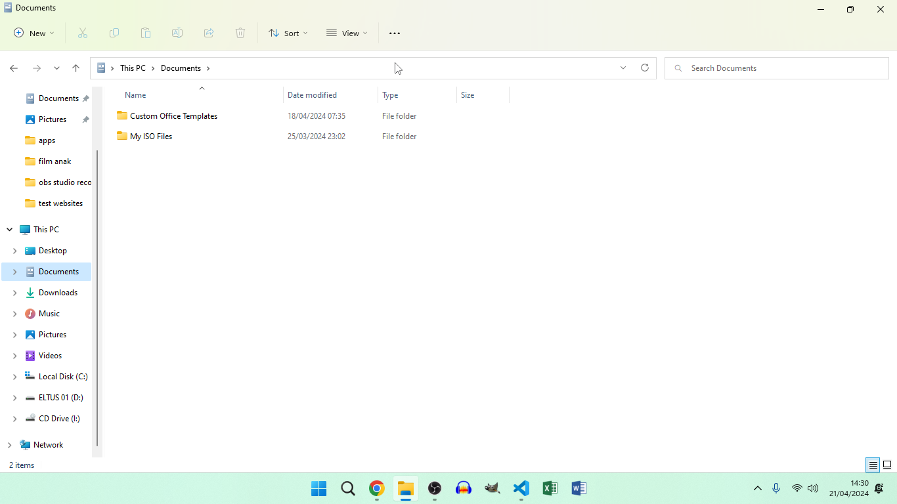

Cara menginstal
- Buka peramban web Anda dan pergi ke tautan ini, lalu salin kode, kemudian buat file-file berikut: Repository
- Instal vscode dan instal ekstensi yang direkomendasikan:
Bagian 2: Ekstensi Vscode
- Live server
- JavaScript (ES6) code snippets
- Prettier - Code formatter
- Better Comments
- Peacock
- VSCode Animations
- vscode-icons
- Bookmarks
- GitLens - Git supercharged (Opsional)
- VSCode Animations
- Apc Customize UI++ (Instal ekstensi ini atau ubah metode Instalasi ekstensi VSCode Animations)
Bagian 3: Cara menginstal
- Lakukan langkah-langkah sebelumnya pada bagian "cara menginstal" bagian 1. (Langkah pertama).
- Lakukan langkah-langkah sebelumnya pada bagian "cara menginstal" bagian 1. (Langkah kedua).
- Saat Anda telah menginstal ekstensi tersebut, yang tadi saya bicarakan, kemudian klik tombol yang bertuliskan: "Go Live". Berikut adalah video tentang tombol "Go Live":
- Buka peramban web Anda, dan ketikkan tautan: "localhost:5500", atau cukup klik tautan ini: Localhost
- Buka folder website percobaan, dan buka file "index.html"
Dan begitulah! Sekarang, Anda telah menginstal website percobaan.
Pembaruan: Saya baru saja menyadari bahwa Anda bisa langsung mengkloning repositori, dan jika Anda tidak tahu, ikuti langkah-langkah ini:
- Buka CMD (alias Command prompt)
- Dan ketikkan "git clone" dengan URL repositori
- Lalu tekan enter.
git clone
Sekarang, Anda memiliki repositori di komputer Anda, dan karena ini hanya merupakan kloning dari repositori, jadi Anda dapat menyesuaikan repositori klon ini sesuka Anda. Karena tidak terhubung ke repositori asli. Dan btw inilah perintah git clone lengkap:
git clone https://github.com/eltus/test-website
Salin perintah ini ke CMD, PowerShell, atau terminal, dan tekan enter.
Peringatan!: Harap gunakan perintah ini pada CMD, PowerShell, atau terminal di dalam suatu folder, atau repositori akan di-kloning ke system32, atau folder pengguna saat ini yang Anda gunakan di dalam folder pengguna. Karena CMD dan PowerShell mengatur folder default sebagai folder pengguna saat ini yang Anda gunakan di dalam folder pengguna, atau folder system32 tergantung pada pembukaan CMD, atau PowerShell, biasanya, atau sebagai admin (A.K.A administrator). Jadi jika Anda ingin mengkloning repositori ini, ikuti langkah-langkah ini:
- Buka CMD, PowerShell, atau terminal di dalam suatu folder yang ingin Anda gunakan untuk mengkloning repositori
- Pergi ke bagian atas lokasi folder, sebagai contoh: 
- Klik itu dengan mouse Anda
- Ketikkan "CMD"
- Lalu, klik enter.
- Salin perintah ini dari bagian "Pembaruan: Saya baru saja menyadari bahwa Anda bisa langsung mengkloning repositori, dan jika Anda tidak tahu, ikuti langkah-langkah ini:" atau salin perintah ini: (sama dengan perintah pertama dari bagian "Pembaruan" pertama)
Dalam contoh ini, mouse saya menunjuk sesuatu.
Sekarang, ini akan membuka jendela CMD
git clone https://github.com/eltus/test-website
Sekarang, Anda memiliki repositori yang di-kloning di folder, yang Anda inginkan repositori untuk di-kloning, bukan folder pengguna saat ini yang Anda gunakan di dalam folder pengguna, atau folder system32.
Pembaruan: Inilah cara menginstal ekstensi vscode dari bagian 1, dan 3!
- Buka vscode, atau instal vscode jika Anda belum melakukannya
- Lihat di sidebar kiri, sebagai contoh:
- Klik ikon 4 persegi berkelompok (A.K.A ikon ekstensi), di bawah 4 ikon lainnya (A.K.A eksplorator, pencarian, kontrol sumber, dan ikon jalankan dan debug).
- Cari 11 ekstensi tersebut dari bagian 3 dari bagian "Cara menginstal"
- Klik pada ke-11 ekstensi tersebut. (Atau 1 jika Anda mencari satu per satu)
- Lalu klik tombol "install" berwarna biru.

Dalam contoh ini, mouse saya ada di sidebar kiri.
Dan sekarang Anda memiliki ke-11 ekstensi tersebut diinstal. Anda juga bisa menginstal ke-11 ekstensi tersebut di pasar ekstensi vscode, dan inilah cara melakukannya:
- Buka peramban Anda, dan cari "pasar ekstensi vscode"
- Klik tautan pertama yang muncul
- Ulangi langkah-langkah yang sama dari bagian "Pembaruan: Inilah cara menginstal ekstensi vscode dari bagian 1, dan 3!" (Langkah 4, 5, dan 6, tetapi tombol install biru menjadi tombol install hijau besar! Satu-satunya hal yang berubah adalah ukuran, dan warna)
- Saat Anda klik tombol "install" hijau besar, situs web mengatakan bahwa ekstensi akan dibuka di vscode, tetapi perlu izin Anda untuk membukanya, klik ya, maka akan membuka ekstensi dan menginstalnya (saya pikir)
Dan sekarang, Anda memiliki ke-11 ekstensi tersebut diinstal dari vscode itu sendiri, dan pasar ekstensi vscode.
Pembaruan: Website saya sekarang sudah didaftarkan! Untuk mengakses website saya, klik tautan ini:
Website percobaan
Pembaruan: Saya baru menyadari bahwa Anda perlu menginstal git agar perintah "git clone" bisa bekerja, jadi inilah cara Anda menginstal git:
- Buka peramban Anda, dan cari, "unduh git" dan klik tautan pertama yang muncul, atau klik tautan ini: Unduh git
- Pilih OS Anda (A.K.A Sistem Operasi). (Entah Windows, MacOS, atau Linux)
- Klik ganda pada penginstal
- Kustomisasi instalasi sebanyak yang Anda inginkan. (Bukan seluruh penginstal secara jujur)
- Klik tombol instal, setelah Anda menyesuaikan instalasi tersebut (Bukan seluruh penginstal secara jujur, lagi)
Sekarang, Anda telah menginstal git, dan dapat menggunakan perintah "git clone".